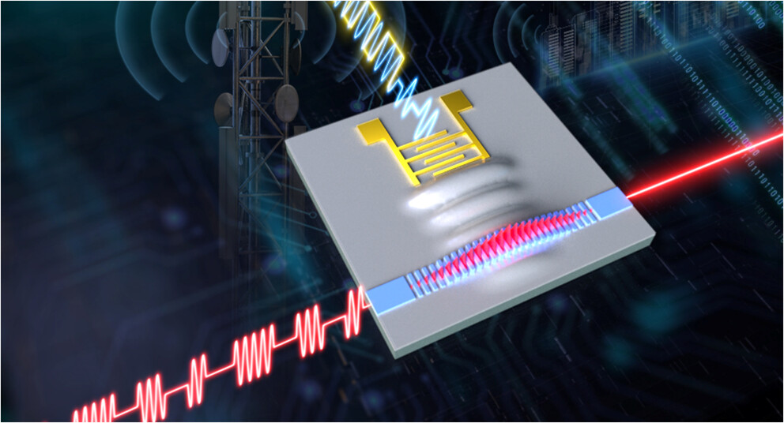
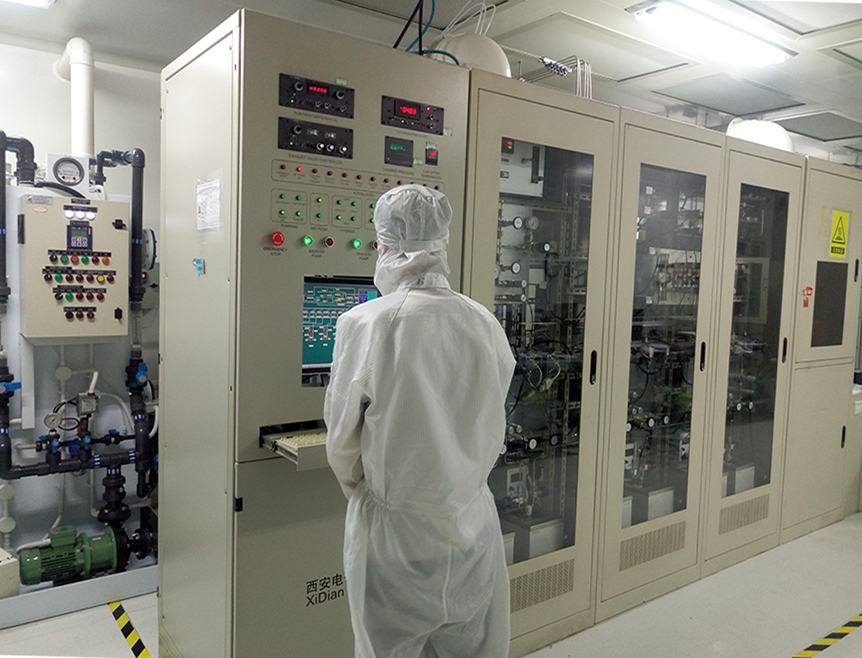
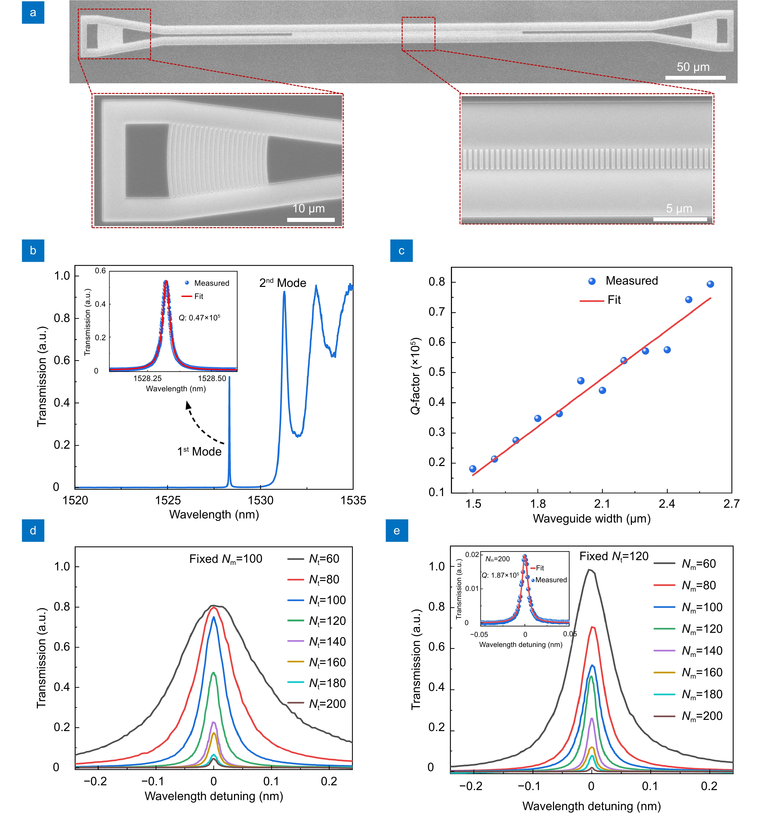
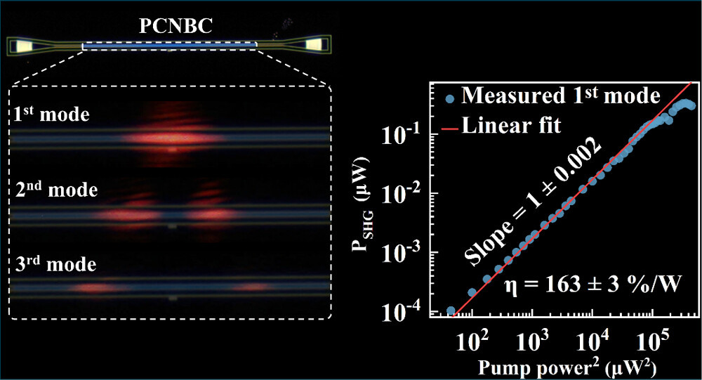

01
硅基微腔权重调制器及阵列化芯片
面向光计算与类脑光信息处理场景，研究硅基光子晶体微腔、全光权重调制器、 可重构光子突触与阵列化芯片，实现高效、紧凑、可集成的片上光调控单元。
Integrated Photonics · Micro/Nano Photonics · Optical Information Chips
课题组面向光计算、5G/6G 通信与片上光信息处理等应用需求，围绕硅基微腔权重调制器及阵列化芯片、 薄膜铌酸锂射频电光与声光调制器芯片、薄膜氮化铝超高频声光调制器芯片等方向开展研究， 探索新型微纳光子器件、片上调制机制与集成工艺平台。

About
先进光子芯片实验室依托西安电子科技大学微电子学院及宽禁带半导体国家工程研究中心， 聚焦集成光电子、微纳光子操纵与光信息处理芯片。课题组围绕硅基光子晶体微腔、 薄膜铌酸锂集成光子平台、薄膜氮化铝声光调制平台等方向，开展器件设计、微纳加工、 光电/声光调制与系统级应用探索。
近年来，课题组在 OEA、ACS Photonics、Optics Letters、Optics Express 等期刊发表系列研究成果， 围绕高 Q 光子晶体纳米腔、二次谐波发射、腔增强声光调制、全光振荡器和光子神经形态器件等主题形成研究积累。 课题组强调“导师亲自带、实验一起做、论文学生一作”的培养模式，欢迎对集成光电子与微纳光子芯片感兴趣的同学加入。
Research
课题组围绕片上光信息处理、微波光子与下一代通信器件需求，形成硅基微腔、薄膜铌酸锂和薄膜氮化铝三条主要研究主线。
面向光计算与类脑光信息处理场景，研究硅基光子晶体微腔、全光权重调制器、 可重构光子突触与阵列化芯片，实现高效、紧凑、可集成的片上光调控单元。
面向 5G 通信、微波光子与片上信号处理应用，研究薄膜铌酸锂平台上的电光调制、 声光调制、二次谐波发射与高 Q 纳米腔器件，提升光-电-声多物理场耦合效率。
面向下一代 6G 通信与高频片上调控需求，探索薄膜氮化铝及相关压电/光子集成平台中的 超高频声光调制机制、器件结构与工艺实现。

Platform
课题组依托微纳光子工艺平台与高速光子器件测试平台，开展从器件仿真、版图设计、 微纳加工到光电/声光测试的闭环研究，为硅基、LNOI 与 AlNOI 集成光子芯片提供实验支撑。
查看工艺页面 →Selected Publications
精选课题组近年发表的三篇一区 Top 论文，展示薄膜铌酸锂集成光子、高 Q 纳米腔、非线性光学和腔增强声光调制方向的代表性成果。

提出面向 LNOI 平台的免刻蚀高 Q 光子晶体纳米梁腔方案，降低铌酸锂刻蚀带来的工艺损伤， 并增强片上光场局域与光-物质相互作用能力，为高性能铌酸锂集成光子器件提供基础平台。
查看论文 →
基于 polymer-loaded LNOI 光子晶体纳米梁腔，通过模式限制与空间重叠协同优化，实现高效可见二次谐波发射， 为片上非线性光源、量子光学和芯片级光互连提供紧凑稳定的器件方案。
查看论文 →
利用 polymer-loaded LNOI 平台中的光子晶体纳米梁腔增强声光相互作用，实现低功耗、高消光比的片上声光调制， 为微波光子学、射频感知与集成信息处理提供新的器件路径。
查看论文 →News
这里先放置两条正式占位内容，后续可替换为论文发表、学术会议、招生通知和项目进展。